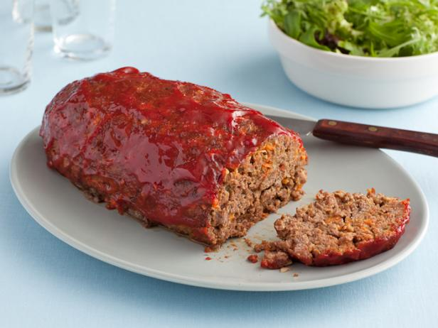

Pretty Damn Good Meatloaf

Description
This easy meatloaf recipe is one of our favorites. Loved by children and adults equally, it's safe to say that its "Pretty Damn Good."
Ingredients:
- 1 1/2lb ground beef
- 1 egg
- 1 onion, chopped
- 1 cup milk
- 1 cup dried bread crumbs
- salt and pepper to taste
- 2 tbsp brown sugar
- 2 tbsp prepared mustard
- 1/3 cup ketchup
Steps:
- Preheat oven to 350 degrees F (175 degrees C).
- In a large bowl, combine the beef, egg, onion, milk and bread OR cracker crumbs. Season with salt and pepper to taste and place in a lightly greased 9x5-inch loaf pan, or form into a loaf and place in a lightly greased 9x13-inch baking dish.
- In a separate small bowl, combine the brown sugar, mustard and ketchup. Mix well and pour over the meatloaf.
- Bake at 350 degrees F (175 degrees C) for 1 hour.